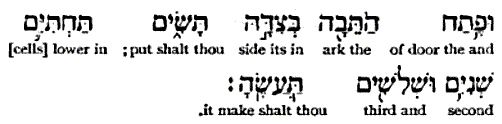
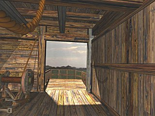
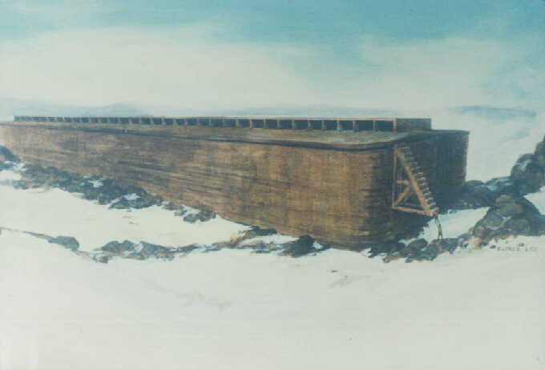
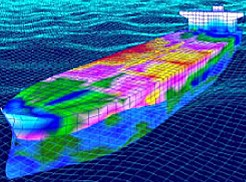
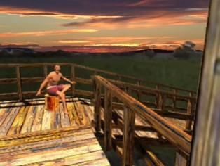

COPYRIGHT Tim Lovett © July 2004
..
|
Gen 6:16b. ...; and the door of the ark shalt thou set in the side thereof; [with] lower, second, and third [stories] shalt thou make it. (KJV & RV) Gen 6:16b. ...; and set the door of the ark in its side. You shall make it with lower, second and third decks. (NKJV) Gen 6:16b. ...; and the door of the ark in its side thou shalt put; in lower [cells] second and third thou shalt make it. (Interlinear Literal. G Berry 1897) |

http://www.netwaysglobal.com/Interlinear/1897-Interlinear-GenI-X.djvu
http://www.netwaysglobal.com/Interlinear/1897-Interlinear-GenI-X.djvu
The door is not mentioned
here, but simply the word for shut. The word used is 

If Noah closed the door himself and God only locked it then the word should have been simply na`al {naw-al'} (to lock, bar. E.g. the door in Judges 3:23,24). So the reading would most naturally be taken as God swung the door shut. Since there is no mention of Noah sealing the door, one might go the next logical step and say God swung the door shut tight.
If the door had been a drawbridge then maybe God should have 'raised it'.

Image Tim Lovett 2003
By the principle of economy of miracles (Ref 2), we should expect the door not to have been designed un-liftable, or impossible for humans to close, or seized or damaged. If the door could not be closed then why would it be called a door by the ordinary word?
The first design to consider should be like an ordinary door, but modified as necessary for the marine application. A drawbridge style is still possible, but does not present any textual advantages, nor is it more waterproof. It is more difficult to shut and would need to be counterbalanced or winched into position.
So why would God shut the door?
This signaled the start of the judgment, which wasn't Noah's call (It is not for you to know the times or dates the Father has set by his own authority. Acts 1). The event was supernatural but not some sort of 'show' for the onlookers. In fact, it may have appeared as though Noah shut the door himself. It might also be possible that God shut the door in order to make it unopenable, just in case they left something behind and re-opened the door to make a dash for it. The flood hit that same day, so there was no time for lingering around outside.
The interesting thing about the exit
from the ark is that the door is not mentioned at all, but rather the removal of
the ark covering. This seems an unlikely description of the re-opening of the
door. The word used in Gen 8:13 for covering is 
 mikceh, which is translated as covering all 16 times it is used, 15 of which
refer to the covering of skins applied to the tabernacle (weather proofing fly
of the tent structure).
mikceh, which is translated as covering all 16 times it is used, 15 of which
refer to the covering of skins applied to the tabernacle (weather proofing fly
of the tent structure).
The root word kacah {kaw-saw'} means "to cover" and is used more often: translated 152 times in the KJV as cover 135, hide 6, conceal 4, covering 2, overwhelmed 2, clad 1, closed 1, clothed 1.
The text seems to indicate that the door wasn't used; a 'removed the covering' is an unexpected way to say 'opened the door'.
This has led some to believe the exit was through the roof, which is an issue for the leading of animals and construction of ramps. If it took 7 days to board the vessel, how long to exit on a makeshift ramp on a mountainside, climbing out the roof? If the ramp is not makeshift then it is a lot of work, especially when all the trees are buried in hardened mud.
 |
ROOF EXIT. Elfred Lee. Larger image at http://www.genesisfiles.com/NoahsArk.htm. The snow suggests the ark has been there a while. Obviously need a better ramp than the one shown here, which is probably for humans only. |
Alternatively, the covering might refer to the hull planking which forms the waterproof membrane - the 'skin' of the ark. Removing some of this 'covering' is almost certainly the easiest way out, a morning's work for these hardy men. There is no metal in the planking between frames and the lowest deck would require no exit ramp. The work could also be done from the outside, since the men are quite likely to have spent the last few months exploring the new countryside. (It should be pretty easy to get out the window and down a rope, or pegs in the wall. They built the thing remember.) External access is not a necessity for the cut-out operation.
For simplicity and since we already have a 'covering' existing as the hull planking, the removal of the covering might be best explained as chopping a hole through the hull. This adds the least to the text and is a very competitive solution logistically, hence should win the Occam's razor test.
Comparison of exit theories |
|||
| Hole Theory | Door Theory | Roof Theory | |
|
Genesis 8:13 |
'Covering' or 'skin' is the hull wall. 'Remove' is chop a hole |
Why doesn't the Bible say "opened the door"? |
'Covering' or 'skin' is the roof 'Remove' is dismantling some roof. |
|
What's entailed? |
Axe a doorway though the side of the hull (several hours) |
Open the door. Find wood (if possible) or remove wood from inside the ark - perhaps selected structural timbers, or empty food silos. Construct a ramp. (Several days) |
Remove a section of the skylight (the rest of the roof is too thick). Construct an internal ramp to reach the roof, then a full height access ramp or bridge from the roof top to the mountainside. (several weeks) |
|
Advantages |
Fits Bible and quickest way out |
More sudden opening visually dramatic - assuming the door opens easily. |
Fits Bible |
|
Objections |
Why have a door at all? To fill the completed ark and shut the old world out. |
Biblical justification lacking. Construction of a ramp when trees are scarce |
Significant construction work required. Poor choice with limited labor. |
|
Future |
Simple access to their first home. |
Ready made secure doorway, not that security would be an issue |
Very annoying way to get into the ark |
So if they have to bust out why have a door at all? Why not get in through a gap in the planking and finish it off just before full time?
Since the entrance saw heavy traffic in the final loading week there was no way to gradually finish off the hole before D-day. The flood came the same day as the closing of the door, so there was not enough time to complete such serious woodwork. With a hull planking in cross laminated layers, a large portion of the hull must be 'rolled back' even to leave a relatively small opening. The closing of the door (judgment by water flagfall) and the last trumpet have strong parallels, the sudden finality of the thud of the door might be like the 'twinkling of an eye' describing the speed of the Christ's return. Besides, with the animals bedding down and meeting their room-mates, this was no time for the auger and mallet.
But by the end of the voyage, they may have been looking for something to hit.
Removed the covering of the Ark
Scenarios where the removal does not imply exit.
There are 57 days between removal of the covering and the exit from the ark. Genesis 8:13,14. W&M p3
Jim King: Because the word translated "window" is most often translated "noon", the window should let in noon light. But, most of the windows that we have described do not let in noon light. Suppose that the window was glass or made of translucent material. The glass could be located between the lattice bracing. So, when Noah removed the covering, he was removing the pieces of glass and perhaps some of the lattice structure. This would let additional light, wake up the animals, and perhaps more importantly, ventilation into the Ark.
Tim: If "removal of the covering of the ark" was the removal of the skylight area, then this removal might be used to supply timber for the construction of a ramp.
The second deck is the most common interpretation, driven by the use of the word 'lower' rather than 'first' for the bottom deck. Hence the entrance could be thought of as being on the middle deck, so the first deck is 'lower'. The word for lower is well defined; tachtiy {takh-tee'}, which is translated as nether parts 5 nether 4, lowest 3, lower 2, lower parts 2, misc 3; (total 19) in KJV.
There is no confusion between the Hebrew words for lower and first, they are distinctly different words; 'first' 'echad {ekh-awd'} is rendered in the KJV as; one 687, first 36, another 35, other 30, any 18, once 13, eleven + 06240 13, every 10, certain 9, an 7, some 7, misc. 87; (total 952)
So the natural entrance level would be the second deck.
From a structural point of view, the middle deck is also sensible because it avoids the areas of higher axial stress near the upper and lower extremities. The upper deck would also require additional ramp construction work, while the lower deck penetrates the structure where it must be built for higher water pressure.
An entrance on the second level is also central, the other decks are no more than one level away.
Since we are considering heavy seas, water proofing is required regardless of which deck is employed. With the relatively lightweight ark cargo, the second level door might be just in the water under still conditions, or perhaps slightly clear of the waterline.
The popular location of the door at the longitudinal center is a different issue. The Biblical text does not require it. A location closer to one end would also be advantageous in a progressive longitudinal build sequence, because the door can be used from early in the project.
Central walking distance? It is initially assumed that the internal ramps will be located at the ends of the vessel. The reasoning is that it helps give a consistent loading (timber ships can suffer hogging creep due to excessive weight in bow and stern relative to the buoyancy forces amidships). Also, if the ends need to be pointed or rounded then the difficult shape suits a place for ramps, winches and pumps. So with internal ramps at the end/s the door is better off away from the center, it saves a bit of walking during construction.
A more significant reason is to keep the door away from the higher stresses in the midship area. For the same reason it helps to keep the internal decks intact rather than penetrated by entrance doors and ramp spaces toward the middle of the hull. The images below give a (rough) idea of how the stresses tend to be amidships. Red is most highly stressed, then yellow, pink, green, blue, white. Common sense would keep the door away from the midship location due to the high axial stresses there. Too close to the bow or stern and the shear stress begins to increase due to static loading. When a ship breaks, it tends to break in half. A good place to put a door might be say 1/3 of the way along the hull, but calculations should clarify this decision.
TORSION OF A BULK CARRIER. Image http://www.classnk.or.jp/hp/Rules_Guidance/Guidelines/English/Container%20Carrier/C-TSA_E.pdf

WAVE BENDING OF A TANKER. Image http://www.classnk.or.jp/hp/Rules_Guidance/Guidelines/English/Tanker/T-start_E.pdf
Certainly don't want a door on the middle of level three.
What would it have looked like?
Gun-ports from a timber ship are illustrated here. A single door would be prudent (rather than a pair of hinged doors), sealing onto a generous rebate in the jamb and possibly including a tapered perimeter that jams the door into the hull under water pressure. This would help to explain why they didn't go out the same way they came in. (By the time they un-jam the door, search for wood and build a ramp, they might as well just chop out a hole one deck below.)
Entry Ramp

Note: All Hebrew characters and references are from the Blue Letter Bible. http://www.blueletterbible.org/
1. Occam's Razor (i.e., the Principle of Parsimony)
The most parsimonious explanation for the sum total of the evidence is most likely to be the correct one. In other words, where there are several equally valid theories, the simplest explanation should be taken.
2. Economy of miracles
Economy of miracles is a 'principle' where God prefers to employ humans to do a job rather than use interventional miracles, or that He does not do miracles without good reason. While the whole of life and the sustaining of the universe is a continuous miracle, the intervening miracle is one which goes outside the norm of this experience. E.g. Against gravity (Elisha's axe head, Jesus on water). Miracles are not to be taken lightly ("Do not put the Lord your God to the test"), similarly we should try not to invoke miraculous intervention beyond what is clearly stated in the Biblical text. God shut a door, not built a door, or shut a wall.